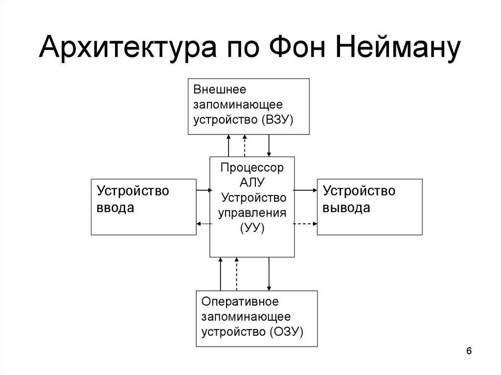

Процессор - это электронный блок либо интегральная схема, исполняющая машинные инструкции (код программ), главная часть аппаратного обеспечения компьютера или программируемого логического контроллера. Иногда называют микропроцессором или просто процессором.
Архитектура процессора — количественная составляющая компонентов микроархитектуры вычислительной машины (процессора компьютера) (например, регистр флагов или регистры процессора), рассматриваемая IT-специалистами в аспекте прикладной деятельности.
